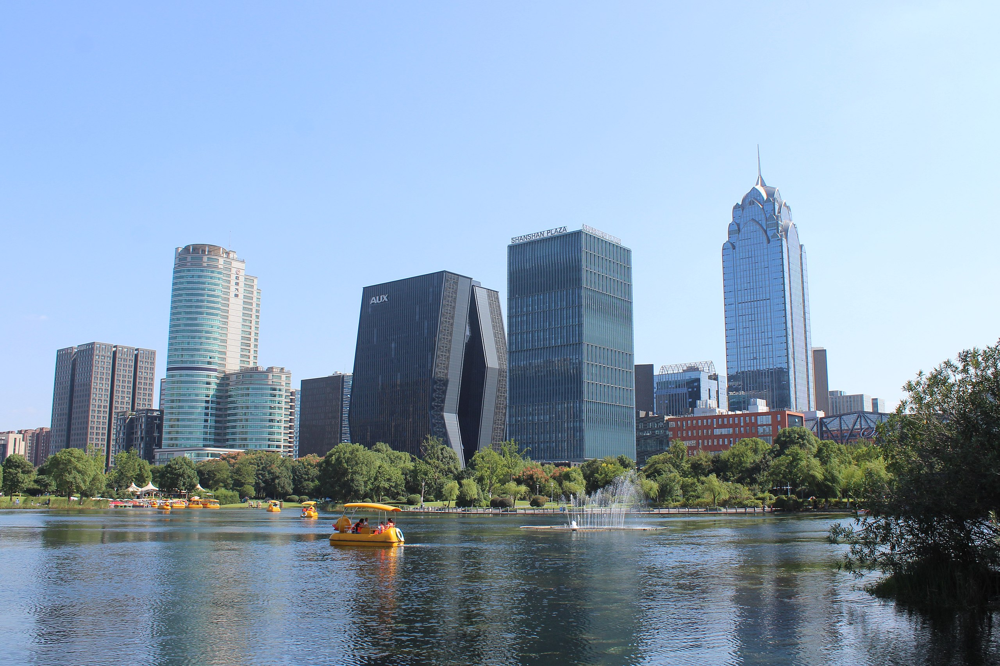
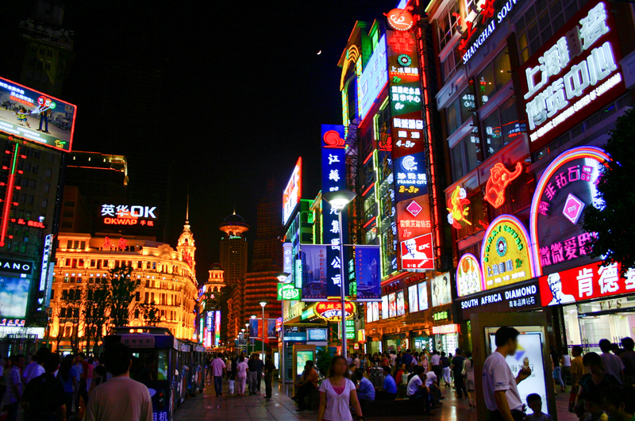
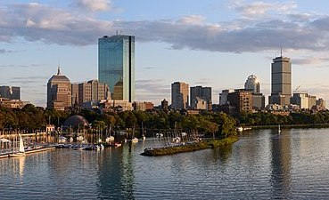
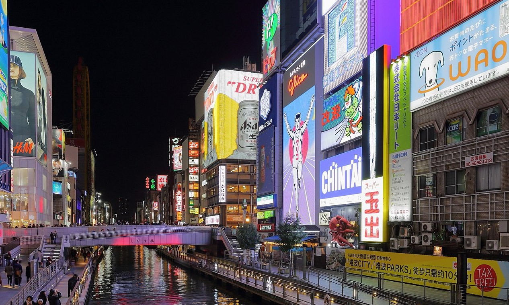
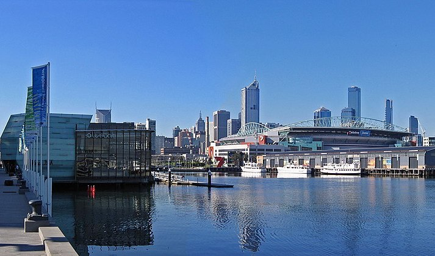

Ningbo is an important port city on the East Coast of China.
I was born and lived in Ningbo. It is a peaceful and familiar place that seems to be constantly developping and changing overtime. One of the main reasons I love this city is that it has so many delicious food. I cannot resist.
Shanghai is one of the most internationally wellknown cities in China.
I went to high school in Shanghai, so a lot of my friends are there. It really is a very vibrant place, and people can always find what they want. There seem to be endless things and places that you can explore. It's a fun and beautiful city to live in.
Boston is one of my favorite cities in the US. I enjoy the atmosphere of the city and I love visiting museums, going to bookstores and the library, and enjoying the food. Sometimes I just like to walk around really. It is one of the imporant reasons why I chose Wellesley.
Osaka is a major cultural and financial center of Japan. I visited there once, and I remember vividly that one night I took a walk alone in the city. It gave me an intimate feeling even though I didn't know it at all, and I really hope to explore it more some time. I also love their accent.
I've been to Australia twice, and I was in Melbourne only very briefly, but I still love the atmosphere of the city. It felt so nice to walk around and drink coffee under a nice weather. I will definitely travel there again and I would love to live there for a while if I have the chance.
